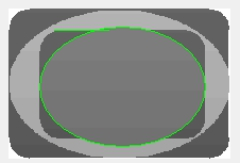
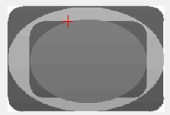

线段到椭圆交点工具计算输入线段与圆的交点。其应用效果如图1所示。
 
| 分类 | 参数名称 | 参数描述 |
|---|---|---|
| 属性窗口 | 无 | |
| 图像窗口 | 输入图像 | 显示待检测的图像。 |
| 线段 | 显示线段。 | |
| 椭圆 | 显示椭圆。 | |
| 数据链 | 输入图像 | 输入图像宽度、高度、像素大小，同图像窗口的输入图像参数。 |
| 线段 | 输入线段，同图像窗口的线段参数。 | |
| 椭圆 | 输入椭圆，同图像窗口的椭圆参数。 | |
| 高级界面 | 无 | 无 |
| 分类 | 参数名称 | 参数描述 |
|---|---|---|
| 监视窗口 | 输入图像 | 输出图像宽度、高度、像素大小。 |
| 交点A | 输出线段与椭圆的交点坐标。 | |
| 交点B | 输出线段与椭圆的另一交点坐标，如果只有一个交点，交点B与交点A输出相同。 | |
| 执行结果 | 工具执行结果。 | |
| 执行时间 | 工具执行时间。 | |
| 图像窗口 | 输入图像 | 显示工具执行结果图像，同监视窗口的输出图像参数。 |
| 交点A | 显示线段与椭圆的交点，同监视窗口的交点A参数。 | |
| 交点B | 显示线段与椭圆的交点，同监视窗口的交点B参数。 | |
| 执行结果 | 显示工具执行结果，执行成功显示“OK”，执行失败显示“NG”，同监视窗口的执行结果参数。 | |
| 数据链 | 交点A | 输出线段到圆交点坐标，供后序工具使用，同监视窗口的交点A参数。 |
| 交点B | 输出线段到圆交点坐标，供后序工具使用，同监视窗口的交点B参数。 |
无
无
参见“\Samples\形状间距及相关点.gvp”。